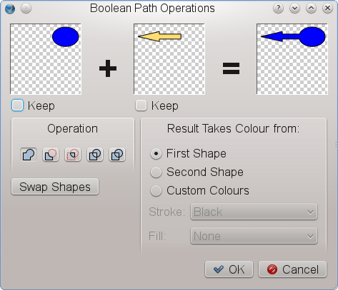
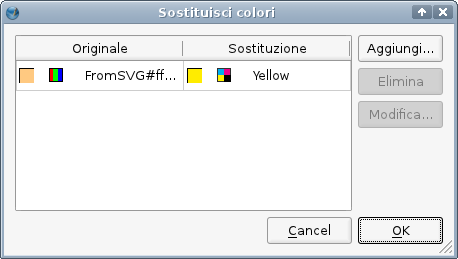
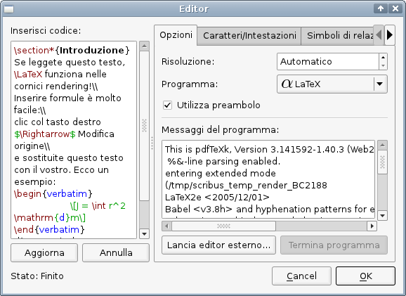
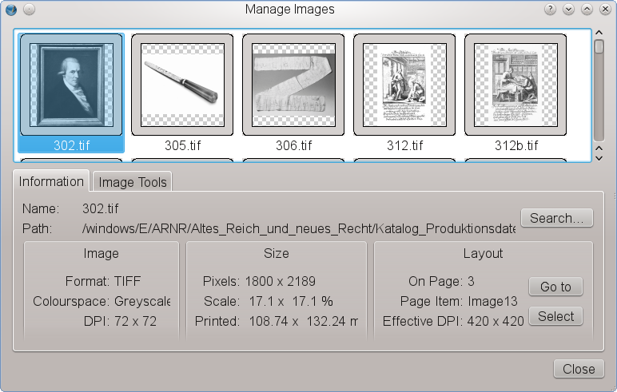

Le novità di Scribus 1.4.4
Questa è una rapida panoramica dei cambiamenti in Scribus rispetto alla precedente versione stabile della serie 1.3.3.x (la 1.3.3.14).
Attenzione: il formato dei file di Scribus è cambiato tra la versione 1.3.3.x e la 1.4.x e non è retrocompatibile con alcuna precedente versione stabile (1.3.3.14 o precedenti). Per essere più chiari, i file generati dalla versione 1.4.x non possono essere aperti con la versione 1.3.3.14 né con alcuna delle precedenti.
Indicazioni generali
- Quando viene lanciato per la prima volta, Scribus 1.4.x dà la possibilità di importare i dati di configurazione da una eventuale versione precedente; tuttavia essi vengono salvati separatamente, quindi sarà possibile eseguire la versione 1.3.3.x in parallelo con la 1.4.x
- Potete installare entrambe le versioni in parallelo ed eseguirle contemporaneamente. L'unica condizione è quella di installarle in directory diverse, ad esempio la 1.3.3.x in
/usr/local e la 1.4.x in /opt o $home/bin su Linux/UNIX. Se compilate Scribus dal codice sorgente, potete usare l'argomento -DCMAKE_INSTALL_PREFIX:PATH= per configurare la directory di installazione di Scribus. Sulle altre piattaforme potete stabilire la posizione durante il processo di installazione.
Novità della versione 1.4.4
Passaggio a Qt4
Uno degli aspetti più impegnativi del processo che ha portato dalla versione 1.3.3.x alla 1.4.x è stato il passaggio al toolkit Qt4. Fra l'altro, questo ha portato a un grande miglioramento delle prestazioni in ambiente Mac OS X, e ha reso possibile la creazione di file DMG nativi per OS X. I DMG di Scribus 1.4.x sono compatibili con OS X 10.5 o successivo. Ha reso possibile anche la creazione di una versione per il sistema operativo Haiku.
Più piattaforme
Scribus ora può essere installato sulle seguenti piattaforme: Linux, FreeBSD, PC-BSD, NetBSD, OpenBSD, Solaris, OpenIndiana, Debian GNU/Hurd, Mac OS X, OS/2 Warp 4, eComStation, Windows 2000 SP 4 o versioni successive (a 32 bit), Windows Vista o versioni successive (a 64 bit). È disponibile anche in formato Scribus Portable per Windows.
Manipolazione degli oggetti
- significativi miglioramenti alla duplicazione multipla
- strumenti di trasformazione simili a quelli presenti in Illustrator
- nuove opzioni per l'allineamento e la distribuzione degli oggetti nella pagina
- selezione multipla avanzata degli oggetti
Testo e tipografia
Tipografia:
- estensione dei glifi
- spostamento verticale variabile della prima riga nelle cornici di testo
- stili di carattere
- nuovo gestore degli stili, che permette di creare gerarchie di stili, stili clonati ed ereditarietà degli stili
- nuovo selettore di glifi che permette la creazione di insiemi di glifi che possono essere condivisi con altri utenti
- importanti miglioramenti nella sillabazione
- margini ottici, per dare l'impressione di un bordo più regolare con il testo giustificato, mediante un lieve spostamento verso il margine di trattini, virgole e parti di alcuni glifi:
Testo:
- controllo ortografico per mezzo di Hunspell
- nuova variabile di testo: numero di pagine
- annulla/ripristina per le azioni sul testo
Strumenti vettoriali
- nuove forme predefinite
- nuovi strumenti per il tracciato, tra cui operazioni booleane sul tracciato, effetti lente e griglia di distorsione
- maggiori opzioni per il testo su tracciato
|  |
Operazioni booleane sul tracciato |
Linee
- nuovi stili di linea
- editor degli stili di linea
Colori a tinta unita, sfumature e motivi
- importanti miglioramenti alla mappa cromatica (con la possibilità di utilizzare più modelli di colore)
- funzione per la sostituzione dei colori a tinta unita nell'intero documento
- possibilità di utilizzare formati esterni di raccolte di colori (EPS, AI, PS, SOC, GPL)
- le raccolte di colori standard sono bloccate
- aggiunta di molte nuove raccolte di colori, tra cui gli standard nazionali di colore di Australia, Francia, Giappone, Regno Unito e Stati Uniti, e inoltre le raccolte di colori Resene® e dtp studio, GiveLife Color System®, Galaxy Gauge™ e colori NAA 10-2006.
- nuovi tipi di sfumature
- possibilità di usare i motivi come riempimento: tutti i formati grafici che Scribus è in grado di utilizzare possono essere usati come motivi
- emulazione del daltonismo per tutti i colori compresi nel documento
|  |
Sostituzione dei colori a tinta unita |
Trasparenze
- i modi fusione, simili a quelli presenti in Photoshop o GIMP, sono disponibili per tutti gli oggetti dei documenti di Scribus e possono anche essere applicati ai livelli
Cornici rendering
- una delle più importanti nuove caratteristiche è l'aggiunta delle cornici rendering, uno speciale tipo di cornice che permette di visualizzare all'interno di Scribus l'output di programmi come LaTeX, Lilypond o POV-Ray
|  |
L'editor delle cornici rendering |
Generatore di codici a barre
- Il generatore di codici a barre è stato rivisto in profondità e ora è in grado di creare codici a barre in tutti i principali formati, compreso il QR.
Filtri d'importazione
- una notevole quantità di lavoro è stata impiegata per la realizzazione di nuovi filtri d'importazione per formati vettoriali, tra cui per il formato Adobe Illustrator (AI). Scribus ora può importare file AI basati sia su EPS sia su PDF. Gli altri filtri sono: Windows Metafile (WMF), Xfig (FIG), Calamus Vector Graphics (CVG), Macintosh PICT (PICT), Kivio Stencils (SML) e Dia Shapes (SHAPE)
 |
Importazione da Adobe Illustrator |
Trattamento delle immagini
- nuovi effetti immagine non distruttivi
- migliore gestione di certe caratteristiche specifiche del formato PSD, come tracciati di ritaglio e livelli
- importanti miglioramenti al gestore di immagini
|  |
Il nuovo gestore di immagini |
Livelli
- i livelli di Scribus possono essere esportati come livelli PDF (solo per PDF 1.5)
- possibilità di duplicare livelli
- modalità “scheletro” per i livelli per rendere più veloce la visualizzazione
- possibilità di forzare il flusso del testo intorno agli oggetti situati su un livello inferiore
Prestampa
- miglioramenti all'anteprima di stampa, tra cui l'indicazione della copertura dell'inchiostro
- miglioramenti alla verifica preliminare
- nuove funzionalità per la prestampa, come segni di pagina al vivo e segni stampante
- possibilità di convertire i colori spot in colori di processo
Esportazione PDF
- esportazione in PDF/X-1a
- possibilità di utilizzare le caratteristiche del PDF 1.5, come effetti di presentazione o livelli PDF
- possibilità di incorporare file EPS e PDF nei documenti PDF
- migliore incorporamento dei caratteri come sottoinsieme
Usabilità
Molti sforzi sono stati rivolti a grandi e piccoli miglioramenti dell'usabilità in ogni parte del programma, ad esempio:
- possibilità di eseguire ricerche nello Schema documento
- molte più opzioni di visualizzazione, tra cui l'anteprima del documento senza guide e bordi delle cornici
- attivazione della gestione del colore con un solo clic
- menù contestuale dello spazio di lavoro, con la possibilità di inserire direttamente immagini vettoriali o di attivare varie opzioni di visualizzazione
- molte più opzioni per automatizzare e rendere più veloce l'inserimento di cornici (ad esempio la finestra di dialogo Inserisci cornici, l'opzione “Strumenti adesivi”)
- miglioramenti alla biblioteca
Modelli
- sono stati aggiunti molti modelli donati da artisti
- è stata avviata la traduzione in altre lingue delle categorie e delle descrizioni dei modelli
Guida in linea
- il contenuto della guida in linea è quasi raddoppiato rispetto alla precedente versione stabile 1.3.3.14. Inoltre molte parti della documentazione esistente sono state aggiornate o completamente riscritte per descrivere le più ampie capacità della versione 1.4+
- molti suggerimenti sono stati aggiunti, e quelli esistenti sono stati ampliati
- la guida in linea è direttamente accessibile dal menù Aiuto